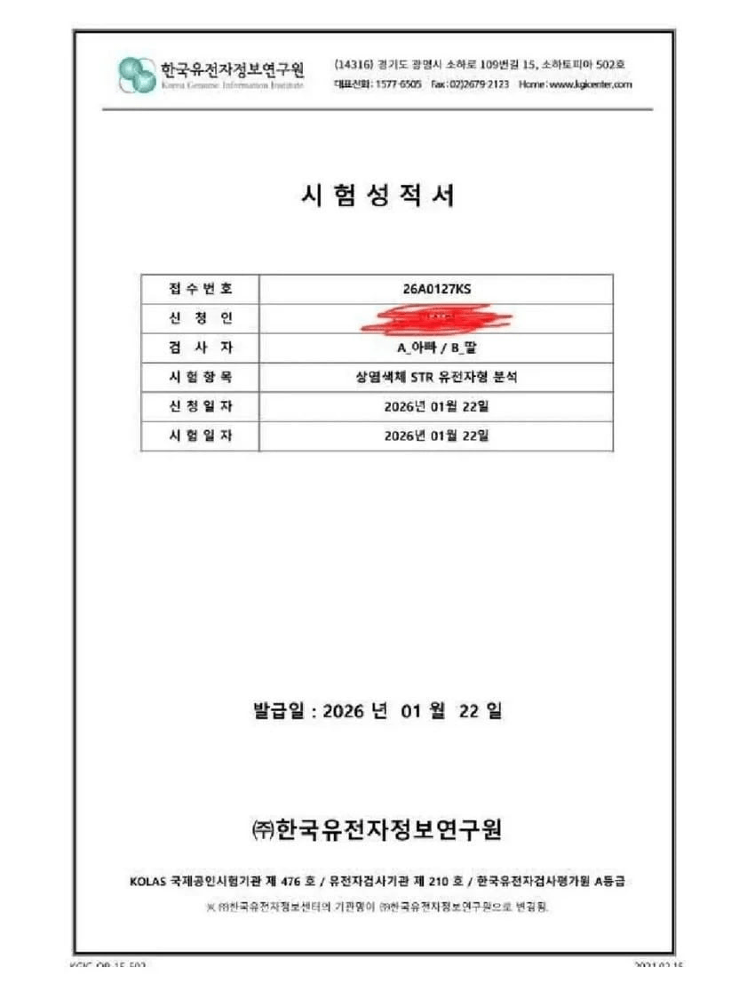
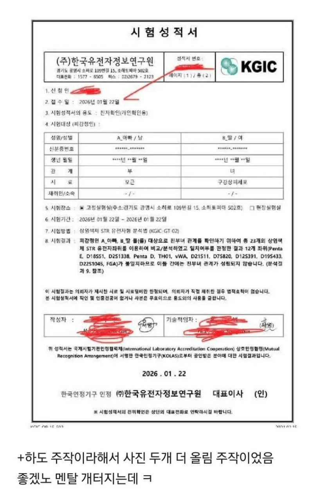

엄.....


엄.....
애가바꼈는데 저정도일치면 그것도문제아냐?
그러면 딸이 한국인이 아닌 수준이 되어야 할껄?
뻐꾺뻐꾺~ 탁란 당했노 ㅋ~
이제 저런 가정을
탁란가정이라고 부르자~
말투에서 틀니냄새나요 ㄷㄷ
니인중 냄새요~
와 이 드립 ㄹㅇ 50대 아재들이 치는거잖아
껄껄껄!
어쩌다 저렇게 늙게되엇을까....
탁란소녀 명작
그나마 다행인게 바로 알아채서지 정들고난뒤면 이혼도 힘들듯
아내것도 비교해봐야 할듯... 애기가 바뀌었을지도 모름